6.1 Catch, landings, and discards
testing
Stock assessment catch data are from assessmentdata::stockAssessmentData. Recreational catch data were downloaded from NOAA MRIP. Commercial catch data were downloaded from NOAA FOSS.
testing
6.1.1 Stock assessment catch
testingFigure 6.1: Black sea bass assessment catch
Risk
See Methods for risk calculation details. testing
Rank of change compared to historical, ranked among stocks
testingFigure 6.2: Black sea bass rank of change in indicator compared to historical, ranked among stocks
Rank of value (magnitude) in each year, compared to other stocks
testingFigure 6.3: Black sea bass rank of value (magnitude) in each year, compared to other stocks
Rank of value (magnitude) within a single stock, compared to all years
testingFigure 6.4: Black sea bass rank of value (magnitude) within a single stock, compared to all years
6.1.2 Recreational catch
testing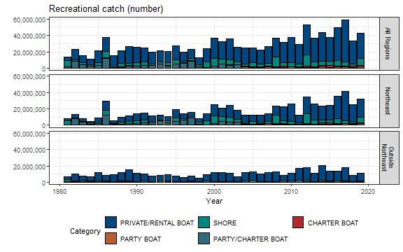
6.1.3 Recreational landings
6.1.3.1 By number
testing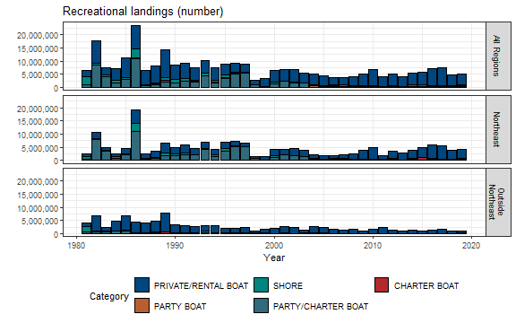
6.1.3.2 By weight
testing
Risk
See Methods for risk calculation details. testing
Rank of change compared to historical, ranked among stocks
testingFigure 6.5: Black sea bass rank of change in indicator compared to historical, ranked among stocks
Rank of value (magnitude) in each year, compared to other stocks
testingFigure 6.6: Black sea bass rank of value (magnitude) in each year, compared to other stocks
Rank of value (magnitude) within a single stock, compared to all years
testingFigure 6.7: Black sea bass rank of value (magnitude) within a single stock, compared to all years
6.1.3.3 Proportion of catch landed
testing
6.1.4 Recreational discards
6.1.4.1 Discards
testing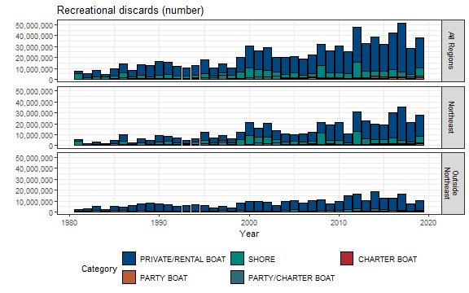
6.1.4.2 Proportion of catch discarded
testing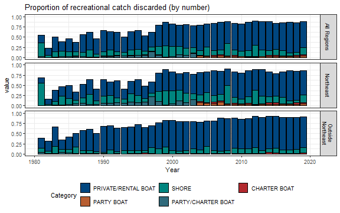
testing
6.1.5 Recreational catches time series
This data was sourced from FOSS - Fisheries One Stop Shop and is inclusive of 1981 to 2019. The entire data set contains 0 species. Figures produced reflect the coverage of the data. With stocks that have high coverage, a running average is calculated. In low coverage stocks, missing values are excluded and a simple time series is produced.
testing
testing
6.1.6 Recreational landings of Black sea bass across states in the mid-Atlantic and north-east regions
testing
testing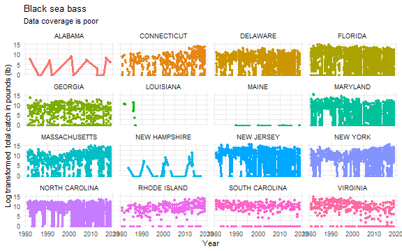
6.1.7 Visualizing Recreational fishing effort
These records are Recreational Fisheries Statistics sourced from the Marine Recreational Information Program (MRIP) via NOAA Office of Science and Technology and are inclusive of all north and mid-Atlantic states. The records span from 1981 to 2019 and are specific to the mode and location of effort. Effort is quantified as angler trips. Mode is divided into Charter boat, Party boat, Party/charter boat, Private/rental boat, Shore.
testing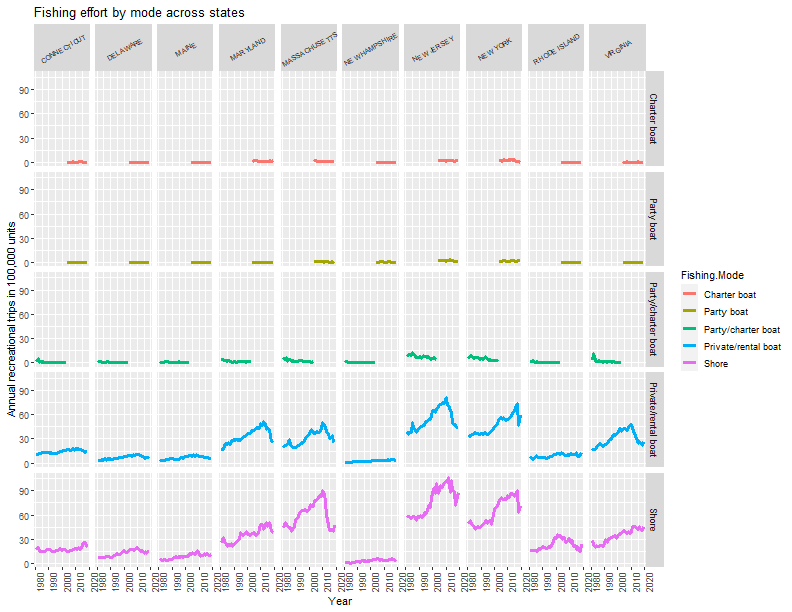
testing
testing
6.1.8 Commercial landings
testing
6.1.8.1 Commercial Landings of Black sea bass
This data was sourced from FOSS - Fisheries One Stop Shop and is inclusive of 1950 to 2019. The entire data set contains 0 species. A total of 9656 aggregated records were removed. These landing reports were aggregations of multiple species and can span several taxonomic groups were removed due to their lack of specificity. 5019 records were withheld due to confidentiality of those specific landings. Figures produced reflect the coverage of the data. With stocks that have high coverage, a running average is calculated. In low coverage stocks, missing values are excluded and a simple time series is produced.
testing
6.1.8.2 Commercial landings of Black sea bass across states in the mid-Atlantic and north-east regions
testing
testing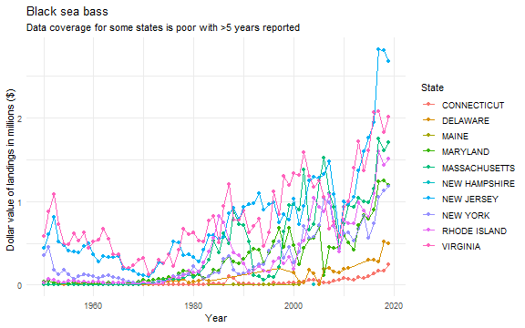
6.1.9 Commercial landings by state and year
testingFigure 6.8: Black sea bass commercial catch
Risk
See Methods for risk calculation details. testing
Rank of change compared to historical, ranked among stocks
testingFigure 6.9: Black sea bass rank of change in indicator compared to historical, ranked among stocks
Rank of value (magnitude) in each year, compared to other stocks
testingFigure 6.10: Black sea bass rank of value (magnitude) in each year, compared to other stocks
Rank of value (magnitude) within a single stock, compared to all years
testingFigure 6.11: Black sea bass rank of value (magnitude) within a single stock, compared to all years
6.1.10 Commercial vs recreational catch
testingFigure 6.12: Black sea bass proportional commercial and recreational catch
6.1.11 Commercial fishing gear
Fishing gear can range widely in their catch ability, selectivity, and effective areas of operations. Using comlandr to extract reported gear used in the many commercial fisheries in the northeast and any trends and/or shifts that may have occurred as one potential explanatory factor on changes in fisheries landings/revenue.
testing
6.1.11.1 Gear usage by year
Each landing record included gear type used, size class of gear, ecological production unit, species landed, weight of catch
testing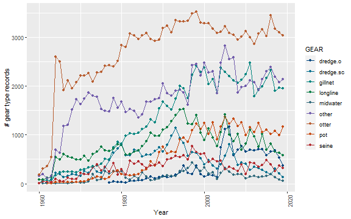
6.1.11.2 Gear diversity all species
testing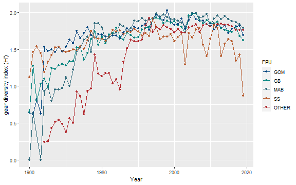
6.1.11.3 Commercial gear types used to land Black sea bass
testing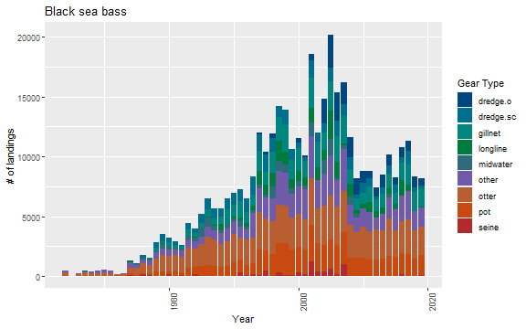
6.1.11.4 Diversity index of gear type across EPUs
6.1.11.5 Diversity index of gear used to land Black sea bass across EPUs
testing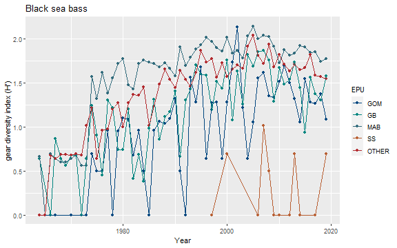